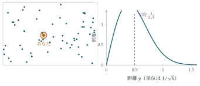

STEP II 2012、第13問
先に進む前に問題を読んでおこう。問題は STEP Support Programme の問題データベースにある： step.maths.org/questions/12-s2-q13
導入
スーパーマーケット、木、星、携帯電話の基地局などがある領域に「ランダムに」散らばっているとき、いちばん近いものまでどれだけ行かなければならないだろうか。その答えは密度 \(k\)（単位面積あたりの平均個数）だけで決まり、しかも特徴的な形をもつ。それがレイリー分布（Rayleigh distribution）である。最も近いものまでの距離は平均すると \(\frac{1}{2\sqrt k}\) であり、1 平方キロメートルあたりスーパーマーケットが 1 軒なら \(500\) メートルになる。
このモデルは空間ポアソン過程（spatial Poisson process）であり、時間上のランダムな到着（第 12.18 節）を 2 次元にしたものである。計算は短く美しいが、本当の面白さは基準としての役割にある。生態学者は実際の最近接距離（nearest-neighbour distance）をこの公式と比べ、木や巣が集中しているのか、ランダムに散らばっているのか、意図的に間隔をあけて配置されているのかを判断するのである。
取りかかる前に
平均（mean）\(\mu\) のポアソン確率変数（Poisson random variable）が値 \(0\) をとる確率はいくらか。
\(\mathrm{P}(0) = e^{-\mu}\) である。半径 \(y\) の円の面積は \(\pi y^2\) なので、その内部にあるスーパーマーケットの個数の平均は \(k\pi y^2\) である。
順を追って解く
段階 1 近くにスーパーマーケットがない
距離 \(y\) 以内にスーパーマーケットが 1 軒もない確率は \(e^{-\pi ky^2}\) である。
段階 2 最近接距離の分布
\(Y \geq y\) とは、距離 \(y\) 以内にスーパーマーケットが 1 軒もないということである。では \(\mathrm{P}(Y < y)\) はいくらか。
\(\mathrm{P}(Y < y) = 1 - e^{-\pi ky^2}\) であり、これを微分すると確率密度関数（probability density function） \[\mathrm{f}(y) = 2\pi kye^{-\pi ky^2}, \qquad y \geq 0. \qed\] が得られる。
段階 3 平均
\(y\,\mathrm{f}(y)\) を部分積分（integration by parts）するか、\(\mathrm{E}(Y) = \int_0^\infty\mathrm{P}(Y > y)\,\mathrm{d}y\) を用いる。そのあと置換して、与えられたガウス積分（Gaussian integral）が使える形にする。
\[\mathrm{E}(Y) = \int_0^\infty e^{-\pi ky^2}\,\mathrm{d}y.\] \(x = y\sqrt{2\pi k}\) と置換すると \(\pi ky^2 = \frac12x^2\) となり、\(\mathrm{E}(Y) = \frac{1}{\sqrt{2\pi k}}\sqrt{\frac\pi2} = \frac{1}{2\sqrt k}\) を得る。■
段階 4 分散
\[\mathrm{E}(Y^2) = \int_0^\infty y^2\cdot2\pi kye^{-\pi ky^2}\,\mathrm{d}y.\] \(u = \pi ky^2\) と置換すると（\(\mathrm{d}u = 2\pi ky\,\mathrm{d}y\) である）、これは \(\int_0^\infty\frac{u}{\pi k}e^{-u}\,\mathrm{d}u = \frac{1}{\pi k}\) となる。したがって分散（variance）は \[\mathrm{Var}(Y) = \frac{1}{\pi k} - \frac{1}{4k} = \frac{4 - \pi}{4\pi k}. \qed\] である。

振り返り
距離の問題を個数の問題に言い換える。「最も近いものが \(y\) より遠い」とは「\(y\) 以内に 1 つもない」ということである。
まず累積分布、次に密度。\(\mathrm{P}(Y < y)\) は直接求まり、それを微分して密度が得られた。
置換によって既知の積分に帰着させる。どのモーメントも、ガウス積分か指数関数の積分に帰着した。
背後にある数学
平面上のポアソン過程
強度（intensity）\(k\) の空間ポアソン過程とは、点のランダムな散らばりであって、互いに交わらない領域に含まれる点の個数が独立であり、面積 \(A\) の領域に含まれる点の個数が平均 \(kA\) のポアソン分布に従うものである。これは、膨大な個数の点を膨大な面積の上に独立かつ一様に、適切な平均密度で落としたときに得られるものであり、攪乱順列（derangements、第 9.8 節）を説明するのと同じ「稀な事象の法則」（law of rare events）による。これは完全空間ランダム性（complete spatial randomness）の自然なモデルであり、現実のパターンはこれと比べて評価される。2 人の生態学者が 1954 年に考案したクラーク–エヴァンス検定（Clark–Evans test）は、観測された最近接距離の平均を \(\frac{1}{2\sqrt k}\) と比較する。それよりずっと小さければ集中（親木の近くに落ちる種子）を示唆し、ずっと大きければ規則的な間隔（縄張りをもつ鳥や、水をめぐる植物どうしの競争）を示唆する。
3 次元の場合
同じ計算を 3 次元で行うと、最も近い星、分子、銀河までの距離について \(\mathrm{P}(Y > y) = e^{-\frac43\pi ky^3}\) が得られる。チャンドラセカール（Subrahmanyan Chandrasekhar）は 1943 年にこれを用いて、ランダムに分布する近隣の星から 1 つの星が受ける重力を研究した。また物理学者は、気体分子の平均自由行程（mean free path）にこれを用いている。
密度 \(\frac{y}{\sigma^2}e^{-y^2/(2\sigma^2)}\) の名は、1880 年に音響理論の中でこれに出会ったレイリー卿（Lord Rayleigh）にちなむ。これは、位相（phase）がランダムな多数の波を重ね合わせたときの振幅を表す。また、2 つの座標が独立な正規確率変数であるような点の原点からの距離もこの分布に従い、これがここに現れる理由を別の角度から見る方法になっている（演習 3）。今日では、多数の経路をランダムな位相で通って受信機に届く携帯電話の電波のフェージング（fading）のモデルとして使われている。
思考のスキル
最小値、最大値、最近接距離の分布については、\(\mathrm{P}(Y > y)\) を直接書き下すのがたいてい簡単である。それを微分して密度を得る。
この方法は、多数のランダムな寿命のうち最大のものを扱う 第 12.25 節 でも再び登場する。大学では、あらゆる「順序統計量」（order statistic）を扱う際の標準的な第一歩である。
次の一歩
中央値。最も近いスーパーマーケットまでの距離の中央値（median）を求め、平均と比較せよ。
2 番目に近いもの。2 番目に近いスーパーマーケットまでの距離の分布を求めよ。（ヒント：\(\mathrm{P}(Y_2 > y)\) は、\(y\) 以内にスーパーマーケットが高々 1 軒しかない確率である。）
正規分布に従う座標。\(U\) と \(V\) が独立に \(\mathrm{N}(0, \sigma^2)\) に従うとき、\(\sqrt{U^2 + V^2}\) の密度が \(\frac{r}{\sigma^2}e^{-r^2/(2\sigma^2)}\) であることを示せ。\(\sigma\) をどの値にすればスーパーマーケットの分布が得られるか。
クラーク–エヴァンス。\(400\) 本の木がある \(1\) km\(^2\) の森を調査したところ、木から最も近い隣の木までの距離の平均は \(35\) m であった。これは完全空間ランダム性と整合するか。それとも集中、あるいは規則的な間隔を示唆するか。
さらに学ぶために
Peter Diggle, Statistical Analysis of Spatial Point Patterns（Arnold）。空間点パターンの統計解析に関する標準的な文献で、クラーク–エヴァンス検定とその発展形を扱っている。
John Kingman, Poisson Processes（Oxford University Press）。任意の次元のポアソン過程を扱った、短く美しい本である。
Geoffrey Grimmett & David Stirzaker, Probability and Random Processes（Oxford University Press）。ポアソン過程の章。